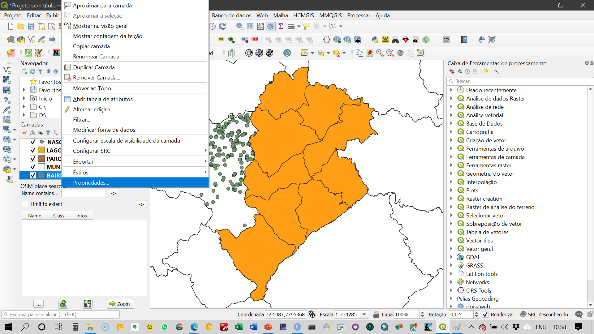
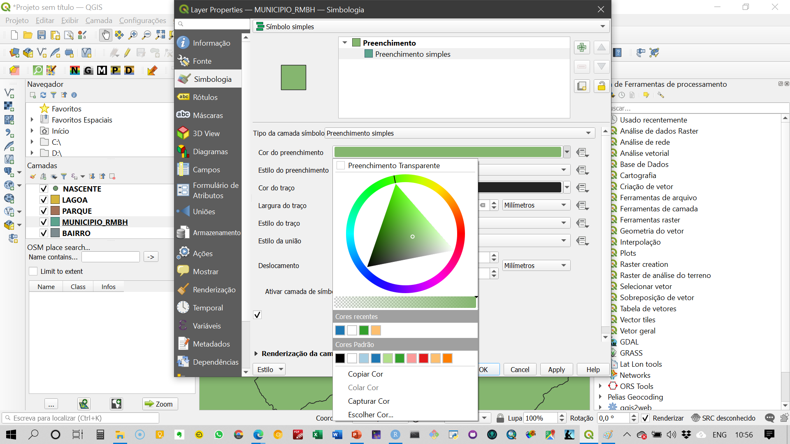
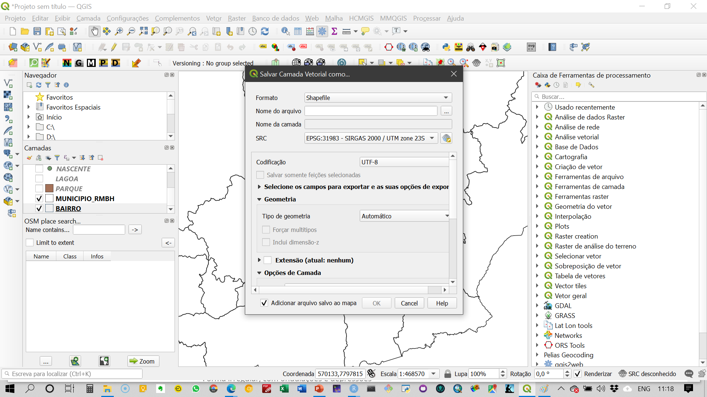
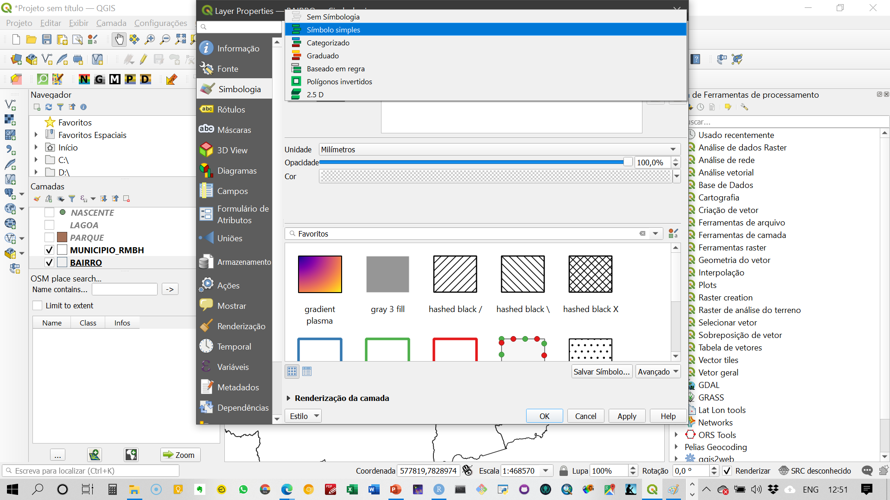
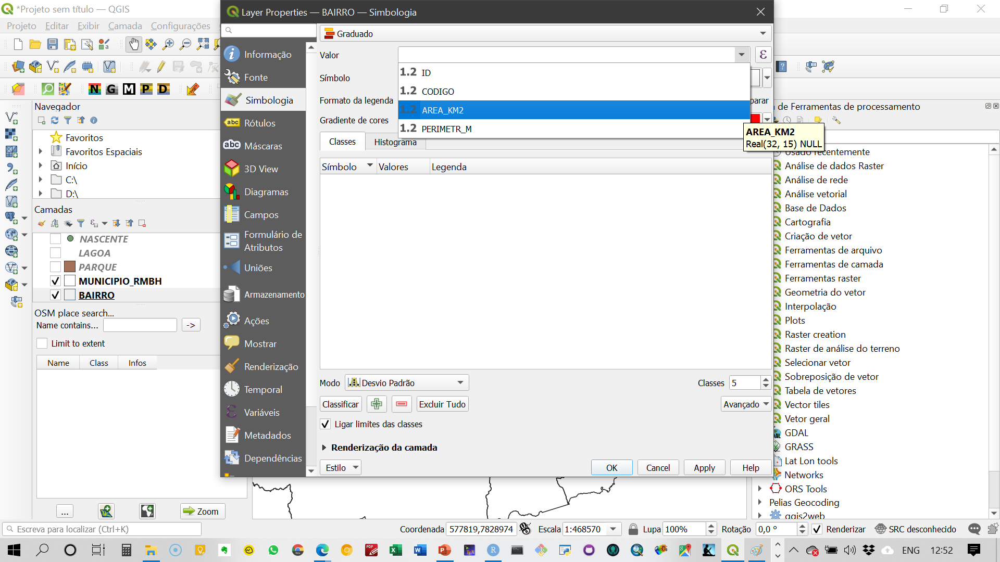
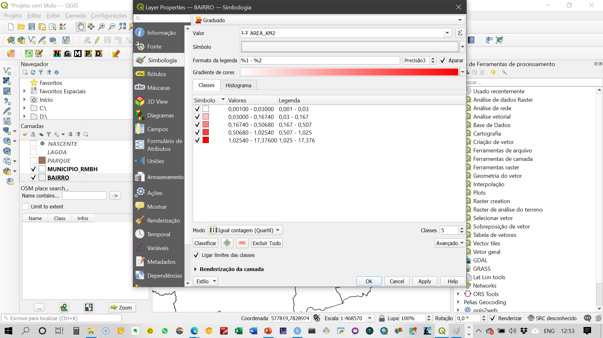

Introdução do QGIS
Contribuições - Renata Lúcia Magalhães de Oliveira e Lucélia Viviane Vaz Raad
Competências a serem desenvolvidas
Ao final desse mini-curso, os alunos deverão ser capazes de discutir os seguintes conceitos:
- Pensamento espacial
- Introdução à cartografia
- forma e dimensões terrestres
- representações: sistemas geodésicos, modelos e datum
- sistemas de coordenadas geográficas e projetadas
- forma e dimensões terrestres
- Sistemas de Informações Geográficas (Geographic Information Systems)
- Unidades espaciais e representação de fenômenos espaciais
- Distâncias
- QGIS
- Ambiente e funcionalidades básicas do QGIS
- Complementos: instalação e para que servem
- Mudança de datum e sistemas de coordenadas
- Tabela de atributos
- Estruturas de dados espaciais
- classificação: vetoriais e matriciais
- interoperabilidade
- geocodificação
- classificação: vetoriais e matriciais
- Funções básicas em GIS
- seleção por atributo e por localização
- join por código e join espacial
- mapas temáticos
- geração de centroides e agregação de variaveis
- conceito de redes
- layout de impressão
- seleção por atributo e por localização
- Ambiente e funcionalidades básicas do QGIS
Palavras-chave
Pensamento espacial
” todas as coisas são parecidas mas coisas mais próximas se parecem mais que coisas mais distantes”. Waldo Tobler
Encontrar significado em formas, tamanho, orientação, localização, direção ou trajetória de objetos, processos e fenômenos
Encontrar significado na localização relativa de múltiplos objetos, processos e fenômenos.
- O que diferencia dados espaciais e não espaciais?
- O que existe em uma determinada localização?
- Onde posso encontrar um determinado objeto?
- O que mudou ao longo do tempo?
- Qual o melhor caminho?
- Como os objetos são distribuídos no espaço?
- Como as condições serão alteradas no futuro?
- O que diferencia dados espaciais e não espaciais?
Representações: sistemas geodésicos, modelos e datum
Geóide
Forma irregular, com ondulações e depressões
É preciso buscar um modelo mais simples para representar a Terra.
Geóide: Superfície delimitada pelo nível médio dos mares supostamente prolongado por sob os continentes
Elipsóide: Modelo matemático que define a superfície da Terra.
Elipsóide de revolução
Ao girar em torno de seu eixo menor, uma ELIPSE forma um volume achatado nos pólos
É a figura matemática que mais se aproxima da forma do geóide. Parâmetros são simples
Parâmetros a = semi-eixo maior; b = semi-eixo menor; f = achatamento = (a-b)/a
Em geral, cada país ou grupo de países adotou um elipsóide de referência para os trabalhos geodésicos e topográficos que mais se aproxima do geóide na região considerada.
Sistemas geodésicos
Permitem estabelecer uma relação entre um ponto determinado do terreno e um elipsóide de referência.
Elegem um elipsóide de revolução que melhor se ajuste às características locais do geóide.
A posição deste elipsóide em relação à Terra, bem como sua forma e tamanho, constituem um conjunto de parâmetros que usualmente são denominados Datum Geodésico.
Datum
Marco geodésico, horizontal ou vertical, usado como ponto de origem do sistema geodésico (referência)
Datum Vertical ou Altimétrico: referência para altitude (marco “zero” – 0 m)
Datum Horizontal ou Planimétrico: referência para coordenadas planimétricas
SIRGAS 2000 - Sistema de Referência Geocêntrico para as Américas
Datum Global, Geocêntrico
SAD-69 - Sistema Geodésico Sul-Americano 1969
Datum Local, Topocêntrico
Sistemas de referências
Como estabelecer localizações na Superfície Terrestre?
Adotar um modelo matemático da Terra: Datum Geodésico (SAD-69, SIRGAS 2000…)
Adotar um sistema capaz de localizar qualquer lugar da Terra: Sistema de Coordenadas
Sistemas de coordenadas geográficas
Sistemas de coordenadas geográficas são necessários para a expressão da posição de pontos sobre uma superfície.
Considerando que esta superfície seja curvilínea (elipsóide ou esfera), cada ponto da superfície terrestre é localizado na interseção de um meridiano e paralelo e seu posicionamento é dado por meio de valores angulares que correspondem a sua latitude e longitude.
Meridianos
- Num modelo esférico, os meridianos são semi-círculos gerados a partir da interseção de planos verticais que contém o eixo de rotação terrestre com a superfície da Terra.
Um semicírculo define um meridiano que com seu antimeridiano formam um círculo máximo.
O meridiano de origem, é denominado Meridiano de Greenwich, com o seu antimeridiano, divide a Terra em dois hemisférios: leste e oeste.
A leste deste meridiano, os valores da coordenadas são crescentes, variando entre 0° e +180°.
A oeste, as medidas são decrescentes, variando entre 0° e -180°.
Paralelos
- Paralelos são círculos cujo plano é perpendicular ao eixo dos pólos.
O Equador é o paralelo que divide a Terra em dois hemisférios (Norte e Sul) e é considerado o paralelo de origem (0°).
Partindo-se do Equador em direção aos pólos tem-se vários planos paralelos ao Equador, cujos tamanhos vão diminuindo até que se reduzam a pontos nos pólos Norte (+90°) e Sul (-90°).
Latitude e Longitude
- Longitude (letra grega lambda λ): É a distância angular entre o lugar e o meridiano de origem, contada sobre um plano paralelo ao Equador.
- Latitude (letra grega phi ϕ): É a distância angular entre o lugar e o plano do Equador, contada sobre o plano do meridiano que passa no lugar.
Sistemas de coordenadas projetadas - projeções cartográficas
Para confeccionar um mapa, precisamos de um método segundo o qual a cada ponto da superfície terrestre corresponda um ponto do mapa e vice versa: sistema de projeções.
A projeção cartográfica transforma uma posição sobre a superfície terrestre, identificada por latitude e longitude em uma posição em coordenadas cartesianas/planas (x,y).
Sistemas de coordenadas planas devem ser utilizados para representação de pequenas porções da superfície terrestre (mapas de grande escala). Coordenadas planas não são utilizadas para mapas de pequenas escalas pelo seu potencial de distorção.


Representar uma superfície curva (a Terra) em um plano sempre envolve deformações. Não existe projeção ideal.
As projeções podem ser:
- Projeção conforme (conformidade): Mantêm ângulos (forma), mas não os tamanhos
- Projeção equidistante: Mantêm distância, mas deforma áreas e ângulos
- Projeção equivalente: Mantêm áreas, mas distorce as formas
- Projeções afiláticas: Não conserva nenhuma das propriedades. Busca reduzir distorções de maneira geral.
Classificação das projeções geográficas
Quanto à Superfície de Projeção:
- Plana ou Azimutal
- Cilíndrica
- Cônica
- Polissuperficiais (poliédrica, policilíndrica, policônica)
Quanto ao Tipo de Contato:
- Tangente
- Secante
UTM
O Sistema de projeção Universal Transversa de Mercato apresenta uma superfície de Projeção com 60 cilindros transversos, cada um com uma amplitude de 6 graus em longitude = 60 fusos.
Cada fuso possui um meridiano central, com 3 graus para cada lado. Os 60 fusos são enumerados a partir do anti-meridiano de Greenwich.
A unidade é o metro tendo como origem o Equador e o Meridiano Central. No hemisfério Sul, o sistema possui o valor 10.000.000,00 m no Equador para a corrdenada Norte, decrescendo para o Sul. E o valor 500.000,00 m no Meridiano Central para a coordenada leste, decrescendo para Oeste e crescendo para leste.
As Coordenadas UTM definem posições bi-dimensionais e horizontais.
Fusos UTM no território brasileiro: Fusos 18 a 25
Belo Horizonte: Fuso 23
Sistemas de Informações Geográficas
GIS significa “Sistema de Informação Geográfica” ou “Geographic Information System”.
Os GIS são um conjunto de ferramentas usadas para coleta e tratamento de informações espaciais, geração de saídas na forma de mapas, relatórios, arquivos digitais, etcc.
Deve prover recursos para sua armazenagem, gerenciamento, manipulação e análise.
Geoprocessamento representa qualquer tipo de processamento de dados georeferenciados (conceito muito mais abrangente).
Um SIG é capaz de processar dados gráficos e não gráficos (alfanuméricos), com ferramentas de análises espaciais e modelagens de superfícies.
Assim como usamos um processador de texto para escrever documentos e lidar com palavras em um computador, podemos usar um aplicativo GIS para lidar com informações espaciais em um computador.
Definições de GIS
“Conjunto poderoso de ferramentas para coletar, armazenar, recuperar, transformar e visualizar dados sobre o mundo real”(Burrough)
“Um sistema de suporte à decisão que integra dados referenciados espacialmente num ambiente de respostas a problemas” (Cowen)
“Um banco de dados indexados espacialmente, sobre o qual opera um conjunto de procedimentos para responder a consultas sobre entidades espaciais” (Smith)
Por que fazer cartografia digital?
Fazer mapas mais rapidamente.
Fazer mapas mais baratos.
Fazer mapas para usos específicos.
Fazer mapas em situações em que não há disponibilidade de pessoal especializado.
Permitir experimentos com representações espaciais diversas dos mesmos dados.
Facilitar atualização de mapas.
Facilitar análises de dados que exigem interação entre estatística e mapas.
Minimizar a necessidade de mapas em papel.
Fazer mapas que não podem ser representados em papel, como em 3D, por exemplo.
Geocodificação
A geocodificação é um processo que permite transformar dados de localização como coordenadas, endereços e nomes de estabelecimentos em uma geolocalização com latitude e longitude.
Unidades espaciais e representação de fenômenos espaciais
A escolha das unidades espaciais dependende tanto da disponibilidade de dados como do fenômeno em análise. Mais informações e discussões serão feitas sobre o conceito de MAUP.
Dados espaciais
Dados espaciais podem apresentar diferentes formatos e comporem diferentes estruturas. Por agora, utilizaremos apenas o formato criado pela ESRI denominado shapefile.

Estrutura do shapefile
.dbf – Banco de dados – Informações dos atributos das feições
.prj – Sistemas de coordenadas geográficas
.snb e .sbx – Armazenam os índices espaciais das feições
.shp – Armazenam a geometria das feições
.shx – Armazena o índice da geometria das feições – busca rápida
.xml - metadado em formato XML
Distâncias
Diferentes conceitos de distância podem ser utilizados no tratamento de dados espaciais visando representar a impedância entre funções/atividades urbanas (conectividade).
- A
Distância Euclidianaé definida como a soma da raiz quadrada da diferença entre x e y em suas respectivas dimensões.- Distância Euclideana: √((x1 – x2)² + (y1 – y2)²).
- A
Distância Manhattantem uma definição mais simples na qual é apenas a soma das diferenças entre x e y em cada dimensão.- Distância Manhattan: |x1 – x2| + |y1 – y2|.
A Distância Euclidiana seria o segmento de uma reta que conceta dois pontos no espaço. A Distância Manhattan seria um segmento de retas na vertical e na horizontal semelhante a uma rota veicular em áreas urbanas.
A distância em rede é aquela equivalente ao deslocamento real no ambiente construído e se aproxima mais da realidade. Entretanto, o esforço computacional e a demanda por dados é sempre maior.
QGIS
Ambiente e funcionalidades básicas do QGIS
1. Ambiente geral

2. Complementos

3. Acesso aos dados espaciais
Vamos trabalhar com dados na estrutura shapefile - camadas vetoriais


4. Mudança de atributos dos shapefiles
Mudança de cores das camadas
- acesso às propriedades da camada

- Recursos para alteração da representação das feições nas camadas

Pode haver incompatibilidade entre feições causadas pela qualidade do dado vetorial ou por uso de diferentes projeções. Isso não inviabiliza o uso do dado espacial, mas podem ser necessárias conversões de sistemas de referência ou mesmo tratamento da geometria das feições.

5. Mudança de datum e sistemas de coordenadas
Transformações on-the-fly
O mecanismo de transformações on-the-fly realiza reprojeções automáticas para fins de visualização/renderização.
São reprojeções dinâmicas, que não afetam o dado original


Reprojetar ou converter
Para reprojetar ou converter para outro formato: Salvar a camada com o novo sistema de referência/formato Botão direito sobre a camada > Save as…


6. Tabela de atributos
A tabela de atributos pode ser acessada pelo mesmo menu da camada. Na tabela de atributos são apresentadas as observações e os atributos de cada feição geométrica gerreferenciada. É análoga a uma planilha ou a um data.frame (R). É importante lembrar que só é possível associar um banco de dados (tabela de atributos) a um dado vetorial. Cada observação é uma feição geométrica desse dado.


7. Geocodificação
O complemento que utilizo para geocodificação é o MMQGIS, que conecta direto com as APIs do Google e do OSM. Para fazer a geocodificação pelo Google, é necessária chave de acesso e token, pois acima de 2.500 requisiçoes por IP por dia são cobradas. Assim, recomendo a utilização do OSM.
O arquivo a ser organizado e importado no QGIS para geocodificação é no formato .csv e codificação UTF-8. Nesse arquivo devem ser organizadas as informações sobre o endereço em quatro colunas:
- address
- city
- state
- country
Na primeira coluna colocamos o endereço completo sem as informações de cidade, estado e país.

8. Mapas temáticos
Mapas temáticos são representações em feições geométricas do atributo de interesse utilizando elementos visuais para visualização da estrutura espacial desses dados.




9. Geração de Layout de impressão
Para gerarmos o layout de impressão dos mapas, é necessário acessar o ambiente de edição do layout.

O ambiente de edição de layout tem a seguinte estrutura:

Para inserir os elementos gráficos e textuais no layout, você deve acessar o menu à esquerda da página em branco e incluir mapas, legendas, indicador de norte, escala, dentre outros elementos.

10. Manipulação de dados
1. seleção por atributo e por localização
2. join por código e join espacial
3. geração de centroides e agregação de variaveis
11. Dados no formato raster
12. GeoDa para análise espacial e econometria espacial
GeoDa - Documentação e download
Federal Center for Technological Education of Minas Gerais.